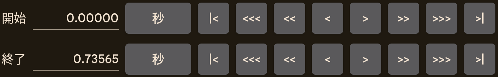

開始位置・終了位置の操作ボタン群
再生ビューの下には、同じ構成の操作行が 2 行並んでいます。1 行目が開始位置、2 行目が終了位置を数値入力やボタンで正確に動かすための操作部です。
画面幅に収まらない場合は、各行を左右にスクロールして操作できます。

1 行の構成（左から）
| 順 | 表示 | 種類 | 説明 |
|---|---|---|---|
| 1 | 開始 / 終了 | ラベル | その行が開始位置・終了位置のどちらの操作かを示します。 |
| 2 | データ位置 | 数値入力欄 | 現在のバーの位置を表示します。数値を入力して確定すると、その位置へバーを移動できます。 |
| 3 | 秒 / サンプル | 切り替えボタン | 押すたびに表示・入力の単位を「秒」と「サンプル」で切り替えます（初期値は「秒」）。開始行と終了行で別々に設定できます。 |
| 4 | |< | 移動ボタン | データの先頭（または相手バーの 1 サンプル右）へ動かします。 |
| 5 | <<< | 移動ボタン | 1 秒左へ動かします。 |
| 6 | << | 移動ボタン | 0.1 秒左へ動かします。 |
| 7 | < | 移動ボタン | 1 サンプル左へ動かします。 |
| 8 | > | 移動ボタン | 1 サンプル右へ動かします。 |
| 9 | >> | 移動ボタン | 0.1 秒右へ動かします。 |
| 10 | >>> | 移動ボタン | 1 秒右へ動かします。 |
| 11 | >| | 移動ボタン | データの末尾（または相手バーの 1 サンプル左）へ動かします。 |
数値の表示形式と制約
| 単位 | 表示形式 | 例 |
|---|---|---|
| 秒 | 整数部最大 4 桁・小数部 5 桁 | 1234.56789 |
| サンプル | 整数（最大 9 桁） | 123456789 |
- 丸め処理：「秒」で入力した値がサンプルの境界に一致しない場合は、最も近いサンプル位置に丸められます。
- 範囲の制限：ボタンや数値入力でデータの範囲外や相手のバーを越える位置を指定した場合、データの端、または相手のバーの 1 サンプル手前で自動的に止まります。
- 音声全体の長さ：データ全体長（秒数・サンプル数）は、画面上部のデータファイル名の後ろに表示されます。